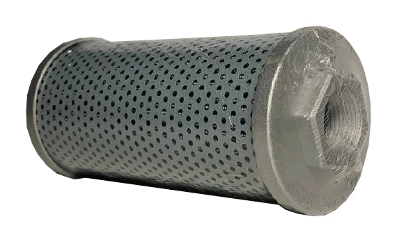

СТТ-Сервис / Дизайн страниц
Два варианта для аренды спецтехники и два для каталога запчастей.
Полноэкранная фотография и галерея работ.
Оранжевый блок с выбором тарифа рядом с галереей.

Большая фотография детали, подбор по артикулу.
Техническая карточка с размерами и фотографиями.